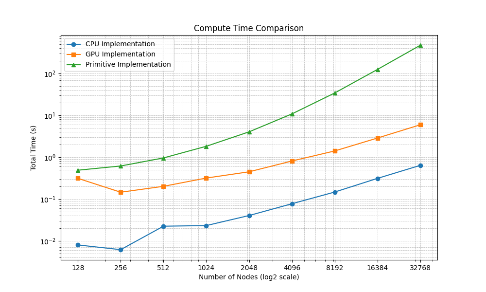

MTHE 493 Capstone - Queen's University - 2026 - GitHub - Thesis
My undergraduate thesis studied the networked finite-memory Pólya process on large scale-free networks. It explored consensus mechanics for the process on graphs with millions of nodes and compared strategies for influencing consensus.
I designed and implemented a simulation and data analysis framework to study the behaviour of these processes under varying constraints of network density and scale, process memory and information dissemination, and intervention vectors. The main technical challenge was computational. The initial implementation was limited to sparse networks of around one thousand nodes, whereas the final implementation can simulate dense networks in the range of 108 nodes.
An urn starts with R red and B black balls. At each step one ball is drawn at random and returned along with Δ more of the same colour. The fraction of red balls is a martingale and converges to a random limit with a Beta(R/Δ, B/Δ) distribution. The urn always settles, but where it settles is decided mostly by the first few draws, when each ball is a large share of the urn.
In the networked Pólya Process (Hayhoe, Alajaji & Gharesifard, 2018), each node in a graph has its own Pólya urn with Ri red and Bi black balls. Let Ni be node i's neighbours together with i itself. At each step, every node draws concurrently from its "super urn" comprised of the union of the red and black balls of all nodes in Ni. So it draws red with probability
P(Zi,n = 1) = Σj∈Ni RjΣj∈Ni (Rj + Bj)
and Δ balls of the drawn colour go into node i's own urn.
In the finite-memory variant of the process (Alajaji & Fuja, 1994), each ball added by a draw is removed M steps later. With Δ = 1, once the first M steps have passed, the proportion of red balls in an urn that started with R0 red and B0 black balls is
R0 + Zn−M+1 + … + ZnR0 + B0 + M
where Zt is 1 if the draw at step t was red and 0 otherwise.
Many real networks are scale-free, meaning most nodes have few connections while a small number are hubs with many connections. The Barabási–Albert model (Barabási & Albert, 1999) produces this by preferential attachment. Starting from a fully connected core of m0 nodes, each new node makes m connections, attaching to an existing node i with probability
Πi = kiΣj kj
where ki is node i's degree. The well connected become better connected, which gives a power-law degree distribution, P(k) ∝ k−3. Larger m means a denser graph with shorter paths between nodes.
A switch, or threshold, graph is built by adding nodes that are either dominating (connected to every node already present) or isolated (connected to none), chosen by a coin flip or by a draw from a separate Pólya urn. A dominating node enters the super urn of every node it attaches to, which is the basis of the first intervention strategy below. Switch networks are extremely dense, since a dominating node at position n brings n edges, yet they can be simulated without storing a single edge (see below).
We compared two ways of pushing the network toward a red consensus, both aimed at its most central nodes.
The initial implementation represented each node and each urn as a Python object, and it is the baseline against which the optimizations below are measured. Each is given with its effect on running time and memory, either measured in the benchmarks or calculated directly, for a network of N nodes and E undirected edges.

The initial implementation assembled each super urn through Python calls to the node's neighbours. This is O(N + E) work per step, but each unit is an interpreted function call, and every step allocates N temporary super-urn objects. The optimized implementation stores the urns as an N×2 integer matrix U and the network as a compressed sparse row (CSR) adjacency matrix A, so that all super urns are given by one matrix product,
S = (A + I)U,
followed by O(N) element-wise operations for the draws and the urn update. All nodes draw from the state at the start of the step, so the N draws are independent given U, and each operation runs as a data-parallel CUDA kernel over every node. At 32,768 nodes a step fell from 416 ms to 3.5 ms on the CPU, a 119x speedup. At 8.9 million nodes the GTX 1660 Ti completes a step in 0.09 s, against 1.6 s on the CPU, an 18x speedup.
The object representation used about 1 KB per node at an average degree of six. CSR stores 8 bytes per edge entry (a 32-bit column index and a 32-bit value, with each undirected edge stored in both directions) and a 4-byte row pointer per node, which is O(N + E) rather than the O(N2) of a dense adjacency matrix. At 71.6 million nodes the CSR matrix occupies 3.7 GB, where a dense matrix would need 640 TB even at one bit per entry, and the whole simulation uses 9.6 GB, about 135 bytes per node. At 1 KB per node, the object representation would have needed about 75 GB.
A dominating node at position j is connected to all j earlier nodes, so a switch network in which each node is dominating with probability p has about pN2/2 edges. At N = 109 and p = 0.01 this is 5×1015 edges, or 80 PB in CSR. The network is, however, determined entirely by one boolean per node, where sj = 1 if node j is dominating, because nodes i < j are adjacent exactly when sj = 1. Node i's super urn is therefore its own urn, the urns of all later dominating nodes, and, if i is itself dominating, the urns of all earlier nodes:
Si = Ui + Σj>i sjUj + si Σj<i Uj
Both sums are prefix sums over the urn matrix. Storage falls from O(pN2) to O(N), 1 GB of flags at 109 nodes, and the work per step falls by a factor of pN/2 = 5×106. With 32 GB of RAM, a one-billion-node switch network ran on a desktop CPU at about 200 seconds per step.
The initial implementation computed attachment probabilities over all n existing nodes for each new node, a total of Σn<N n ≈ N2/2 operations. Growth was therefore O(N2), which took 434 seconds at 32,768 nodes. Two changes reduce the cost to O(mN), which is linear in the number of edges.
The first is a stub list, an array of edge endpoints in which node i appears ki times. A uniformly random entry is node i with probability ki / Σj kj, which is exactly the attachment rule, so each of a new node's m targets is drawn in O(1) time without recomputing any probabilities. The second is batching, in which a batch of new nodes samples all of its targets at once from the same snapshot of the graph and any node that draws a target twice resamples. This reduces the number of sequential iterations from N to the number of batches. The 10,553,408-node network used in the analysis section of the thesis was grown in 896 batches,
64 + 256×8 + 256×256 + 256×8,192 + 128×65,536 = 10,553,408,
about 11,800 nodes per batch on average. At 17.9 million nodes the batched sampling takes 4.9 s on the CPU, 1.5 s on the GTX 1660 Ti (3.2x) and 0.6 s on an A100 (7.7x). On the GPUs the build time is then dominated by conversion of the edge list to CSR, which the simulator performs on the host above 106 edges to stay within the 1660 Ti's 6 GB of VRAM. At 71.6 million nodes, for example, the A100 samples the graph in 1.5 s and spends a further 27.8 s on the conversion.
An intervention node changes the graph. Each intervention event extends the urn, reinforcement and memory arrays and rebuilds the CSR matrix, at a cost of O(MN + E), so at 10.5 million nodes every event copies the 3.0 GB array that records each node's last M draws. Direct injection adds r red balls to k rows of U, which costs O(k) and leaves the graph unchanged. Target rankings are computed once. Degree centrality counts each node's occurrences in the edge list, O(E), and sorts the counts, O(N log N). Eigenvector centrality uses power iteration, x ← Ax / ‖Ax‖, stopped when x changes by less than 10−6 or after 100 iterations, so it requires at most 100 sparse matrix-vector products of O(N + E) each.
Below are three rows from the simulation benchmark, timing the task of growing an m = 3 Barabási–Albert network, building the CSR matrix, and running 100 Pólya steps. Benchmarks were run on available consumer hardware and modern data center chips.
| Nodes | Edges | Ryzen 3 3100 | GTX 1660 Ti | A100 |
|---|---|---|---|---|
| 2.2 M | 6.7 M | 38.2 s | 3.7 s | 1.7 s |
| 17.9 M | 53.7 M | 348 s | 25.3 s | 9.3 s |
| 71.6 M | 215 M | 1,565 s | 1,557 s | 37.9 s |
Note that the 1660 Ti is about 14× faster than the CPU until the graph no longer fits in its 6 GB of VRAM. At 71.6 million nodes the simulation needs about 9.6 GB of GPU memory, so the matrices are forced into unified memory. As a result the GPU spends its time paging data across PCIe, and it falls back to CPU speed. The A100 keeps everything in its own memory and finishes the largest run about 41× faster than the CPU.
With the simulator in place, we swept intervention strength, number of targets, timing, targeting rule and network density. Rather than walk through every run, this section describes the patterns that held across them, the mathematics behind each, and one representative comparison.

With switch-network interventions, the m = 3 and m = 5 networks reached full consensus and the m = 1 network about 90%, while direct injection barely moved the m = 1 network at all. After warm-up, a node with d neighbours draws from a super urn of 74(d + 1) balls. In a sparse network super urns are small, so a few injected red balls dominate a target's neighbourhood, but paths between nodes are long and few, so that local bias spreads slowly. In a dense network the paths are short, but the super urns are large. The smallest hold 148 balls at m = 1 and 444 at m = 5, and those of hubs run to tens of thousands, so the same 296 red balls that dominate a sparse neighbourhood barely register at a hub. Denser networks spread infection faster but need larger interventions to start it.
Every parameter showed diminishing returns, with switch-network gains flattening past about 1,250 red balls per node, seven nodes per intervention or a 10% intervention probability, and injection gains flattening past about 300 red balls per target. Timing mattered more than volume. With a constant intervention probability, interventions kept arriving after infection had already taken off, so we switched to a decaying probability p(t) = e−t/τ, which concentrated interventions at the start and made them more cost-efficient.
Memory explains both effects. A steady-state urn is a moving average of its last 72 draws, so a node stays infected only while its neighbourhood keeps drawing red, and past reinforcement cannot be banked. Within that window the urn's sensitivity to early draws still applies, so infection that spreads early becomes self-sustaining and resources spent after that point buy little.
Targeting by degree beat targeting by eigenvector centrality at every density. With 74 red balls per target on the m = 3 network, eigenvector targeting left about five times as many nodes near an even split (510,784, against 101,312 for degree). A high-degree node's urn appears in the most super urns, many of them belonging to other hubs, since the hubs of a Barabási–Albert graph form a densely connected core. Eigenvector centrality rewards connections to important nodes rather than many connections, so its targets reach fewer super urns directly and their influence has to pass through intermediate hubs first.
The two strategies touch different super urns. Injecting into node j raises Rj, which sits in the super urns of j and its neighbours, but changes no neighbourhood. An intervention node adds a term to the super urn of every target, so one node wired to a thousand hubs biases all of them at once, and the bias spreads through the hub core and outward. With an unlimited budget, injection is faster, because it biases its targets and their neighbours immediately. Under a fixed budget the outcome depends on the cost model, because injection is charged for every target while an intervention node costs the same whether it connects to ten nodes or a thousand.
One of the fixed-budget comparisons we ran shows the difference. On a 10.5-million-node network, with the switch-network intervention given a budget 25% smaller than direct injection, the nodes were distributed by red fraction at step 862 as follows:
| Red fraction | Switch network | Direct injection |
|---|---|---|
| 0.5–0.6 | 0 | 914 |
| 0.6–0.7 | 600 | 59,885 |
| 0.7–0.8 | 79,961 | 1,257,616 |
| 0.8–0.9 | 2,603,529 | 5,357,550 |
| 0.9–1.0 | 7,869,319 | 3,877,443 |
| Infected (≥ 0.8) | 99.2% | 87.5% |
The switch-network run infected 99.2% of nodes, with three quarters above 90% red. The injection run passed the 80% consensus threshold at 87.5%, but left more than 1.3 million nodes below the infection threshold.
Python, NumPy, SciPy (sparse matrices), CuPy and CUDA, Google Colab, Matplotlib, Gephi.